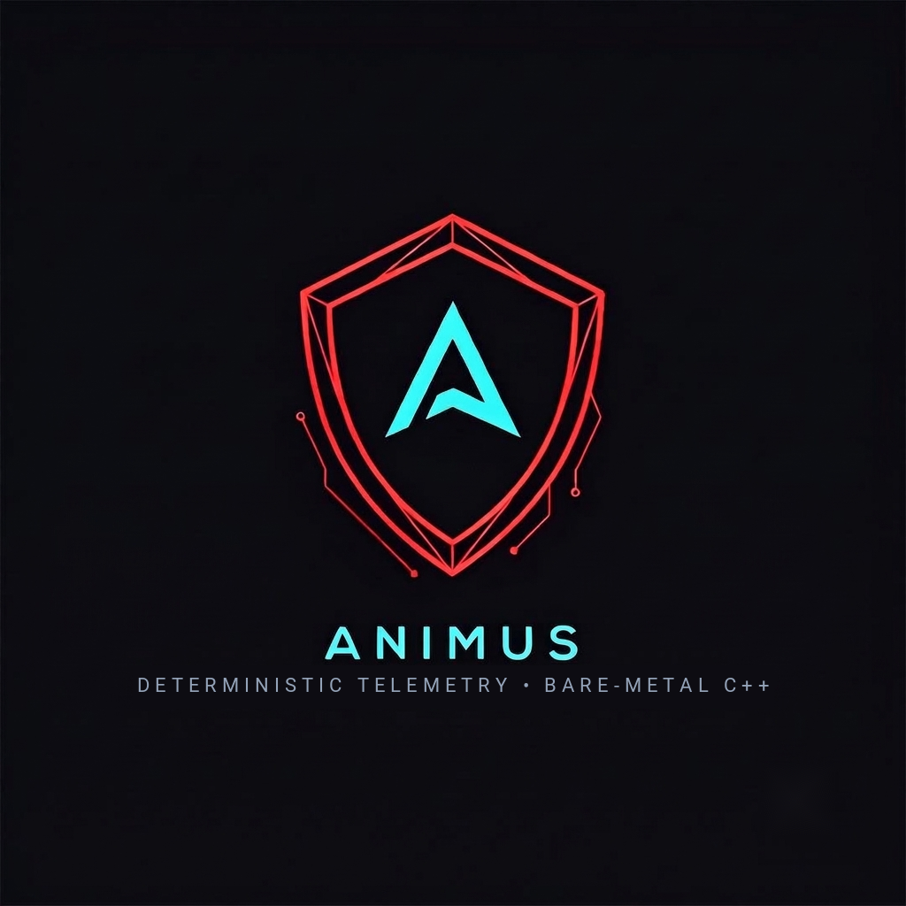

Outbound Operations Console
All 4 GTM motions in one view · local only, never pushed · localStorage-persisted send state on this machine only
All
Indian FinTech & Aero
Gaming & Security
Ready Only
Contacted